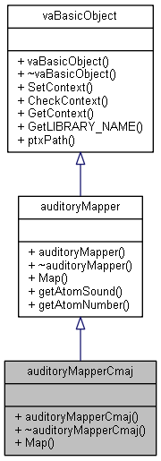

#include <vaAudioModel.h>
Inheritance diagram for auditoryMapperCmaj:

Collaboration diagram for auditoryMapperCmaj:
Public Member Functions | |
| auditoryMapperCmaj () | |
| ~auditoryMapperCmaj () | |
| virtual void | Map (float maxDist, std::vector< stk::StkFrames > &scannedRays, std::vector< primDes > desc, int scale) |
 Public Member Functions inherited from auditoryMapper Public Member Functions inherited from auditoryMapper | |
| auditoryMapper () | |
| ~auditoryMapper () | |
| float | getAtomSound (int type) |
| int | getAtomNumber (std::string type) |
| Public Member Functions inherited from vaBasicObject | |
| vaBasicObject () | |
| ~vaBasicObject () | |
| virtual void | SetContext (optix::Context &context) |
| bool | CheckContext () |
| optix::Context | GetContext () |
| const char * | GetLIBRARY_NAME () |
Additional Inherited Members | |
| Static Public Member Functions inherited from vaBasicObject | |
| static std::string | ptxPath (std::string const &cuda_file) |
Detailed Description
Mapper to auditory waves other mapping style
TODO: clean the entire architecture here
Constructor & Destructor Documentation
◆ auditoryMapperCmaj()
|
inline |
◆ ~auditoryMapperCmaj()
|
inline |
Member Function Documentation
◆ Map()
|
virtual |
Reimplemented from auditoryMapper.
The documentation for this class was generated from the following files: